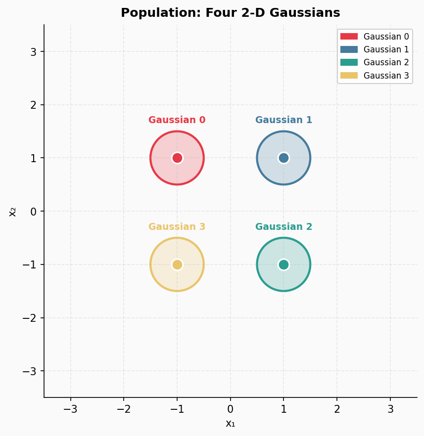
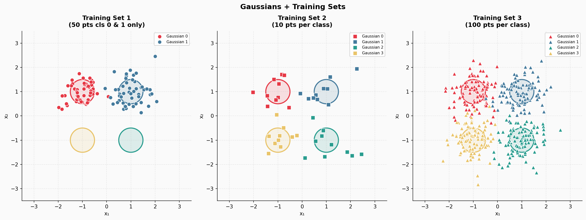
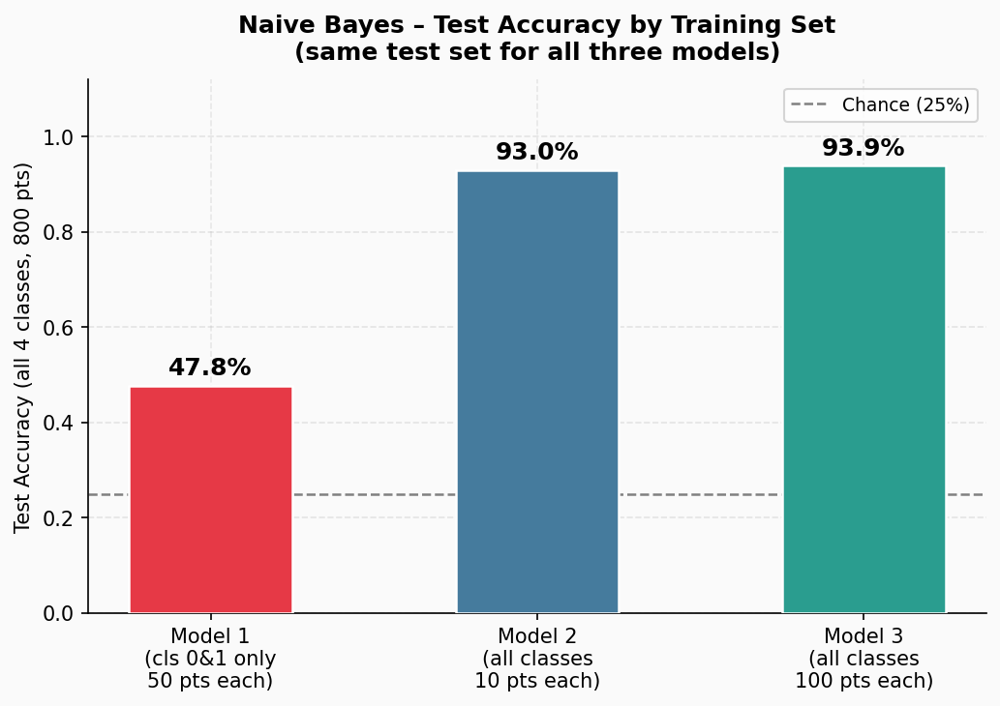
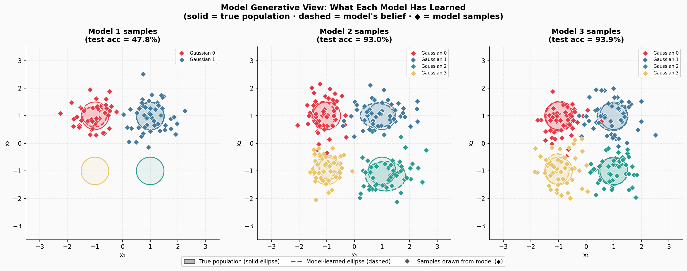

In the past couple of months I had two extremely interesting discussions. First, with Ewelina Weglarz-Tomczak, about training AI for biology and biochemistry. I was complaining about hardness of training models in AI x Bio, the complexity and scarcity of data. She made me realize that the problem comes from mainly two things: (i) the lack of our understanding of biological laws, and (ii) the confusion in formulating biological problems to solve. These two are tightly connected. While in physics, there are multiple laws that govern the world (I know, there will be someone outraged with this statement, but overall I think we can agree we know many laws of physics), in biological systems, we can't agree on whether observed cells contitute a new class of cells or not, and even how to measure some quantities in the first place! Given that, almost a natural consequence is a big confusion in terms of defining problems we want to solve, and also how to formulate proper benchmarks and evaluation testbeds. We are getting in to the chicken and the egg problem: We don't know what to assess, and, thus, we don't know how to assess it. I am exaggerating here a bit, but if try to see my point and you have worked in biology, I think we can agree on that (at least mostly).
The second interesting conversation I had was with a completely different set of folks, the top-notch AI researchers: Yinghzhen Li, Pierre-Alexandre Mattei, and Jes Frellsen. When we organized the Generative Modeling Spring Schoold a month ago, during a diner, I started bringing up the problem of proper evaluation in biology. In fact, the problem evaluations in generative modeling is a long-standing problem, hence, I also added my 2cts on that too. Nowadays, we as the AI community are very comfortable with using whatever it needs during training as long as we don't touch a test set, and then comparing on a common ground, i.e., a given test set. Over the years, I tried to argue with some researchers that this is not necessarily fair, but I have been always dismissed. As a modest person, I thought: "Well, maybe they are right. Maybe comparing on the same test set is enough, and we shouldn't bother". But these days, I think we crossed the Rubicon and it has simply become unbearable. Every day we see that there is a new LLM beating everything else on 5 benchmarks. The next day there is a new model killing it on 7 benchmarks. Then a big company releases a forecasting tool that got the best, much better than a smaller company did so far. We are in a constant race of beating scores. And that's fine as long as we are scientific about!
So what is my problem, you may ask. My problem is NOT comparing apples to oranges; my problem is we compare sweetness of apples from a spring, when they just turned into bulbs, to apples from a fall, when they are ripe, juciy and super sweet! In terms of AI, my claim is this:
For a given problem at hand, to properly evaluate various methods, we should ensure that they all have access to the same data distributions
A few explanations are needed here:
I hear all the screams now, I get you, but this is extremely important to be crystal clear if we want to be scientific. I cannot use different training data and then claim I got state-of-the-art (SOTA)! If I use the same training data and claim SOTA, I have to be very clear why. I saw multiple papers that presented SOTA results claiming the superiority of their model but the truth being told, the extra gains in scores came from a well-tuned optimizer (e.g., larger mini-batches, training for longer, more compute power). But I do not want to go there, it is more subtle. What I try to say here is this: Using different training data and then comparing methods is unfair. And I will stand by that. To support my claim, I will show you a simple example.
NOTE: OK, I mentioned my great colleagues and our discussion during the GeMSS 2026. They raised two interesting points I want to share: (i) They were disappointed that we (as the AI community) completely abandoned more principled, statistical analysis of results. Of course, nowadays, it is hard to report p-values or carry out hypothesis testing, but we do not do any uncertainty quantification almost. Nothing. Are we so lost in getting first? Or is it a corporation attitude that leads us all in research? (ii) Jes came up with this brilliant, simple yet neat example of training logistic regressors. If take two logistic regression models and train them with different datasets, and then evaluate on the same test set, can we say one model is really better than the other? Well, it depends on how close training data was to test data. For both points, we didn't get far and I hope I can push them to write a proper paper about that at some point. Here, I'd like to take off with the example Jes gave, and be more concrete. Since I am in awe for generative models (duh...), I decided to pick the simplest generative model I could think of: Naie Bayes. Moreover, circling back to Ewelina's point, this is a great real-life application that shows how misleading many papers are. A company that has more training data doesn't necessarily win, the quality matters. But on the other hand, if we don't even know what we solve, how we can get proper data? Given all wet labs in the world, if I feed them with a blood sample from my left index finger all the time, no matter how many trillions of cells I will give them, it will be useless, unless I want to really understand what's going on in my left index finger.
Alright, ad rem! Let's talk AI!
Let us image the following situation. We have the true data distribution being a mixture of four labeled Gaussians, and depending from which Gaussian a datapoint comes, we label it accordingly. As a result, we have a nice example of labeled data. We pick the following means of Gaussians: $(-1, 1), (1, 1), (1, -1), (-1, -1)$. All Gaussians are isotropic (i.e., diagonal covariance matrices with the same variances in all directions), and they share the same variance equal $0.25$. This true data distribuitioin in presented in Figure 1.

Now, we construct three training data:
Note that these three training datasets are fully labeled, there is nothing funky going around except the first training set is crippled, but on purpose. We depict these three training sets in Figure 2.

As mentioned earlier, we fix the class of models to be Naive Bayes with $p(x|y)$ being the product of four Gaussians, i.e., $p(x|y) = \prod_{i=1}^{4} \mathrm{Normal}(x|\mu_i, \mathrm{diag}(\sigma_i^2))$, and $p(y)$ being categorical, i.e., $p(y) = \mathrm{Categorical}(y|\theta)$. As a result, we can express the joint distribution as $p(x, y) = p(x|y)\ p(y)$. Our adaptive parameters are means $\{ \mu_i \}_{i=1}^{4}$ and variances $\{ \sigma_i \}_{i=1}^{4}$, and $\theta = (\theta_0, \theta_1, \theta_2, \theta_3)$. We use small Laplace smoothing for excluding the situation that any $\theta_i$ collapses to $0$. The training procedure simply results in calculating the empirical means, the empirical variances, and the empirical probabilities of classes. Once we have those estimates, we can calculate both the class probabilities using the sum rule and the product rule: $$ p(y|x) = \frac{p(x|y)\ p(y)}{\sum_{i=1}^{4} p(x|y=i)\ p(y=i)}, $$ and we can also sample data points by following the generative process:
So far, so good!
To avoid any potential errors, the code was written using Python and scikit-learn.
After estimating parameters based on the three training datasets, we obtain three models. See figure 4.

As you can easily predict, the first model simply sucks. No wonder, it saw only two out of four Gaussians! What about the other two models? Well, given our setting, no surprise, they work similarly. But on the other hand, it may be suprising. After all, we have been always told that more data means better performance! Yet, the difference is tiny.
This simple case gives us a few interesting points to discuss:
Training data matters!. If we look at Figure 3 alone, we say: Ooooh, model 1 is super bad... And we provide SOTA with Model 3! Again ang again: The class of models is the same, only training data are different! As a result, having a mismatch between training distribution and test distribution, no wonder, we will get worse performance. ML 101.Having different training data does not allow us to claim SOTA performance of a method, unless we publish our findings in a different domain, then getting a boost of over $40\%$ indicates that we found something interesting in the underlying phenomenon. Not the other way around.Additionally, just for fun, as a generative guy, I also sampled from the models. For Model 1, obviously, it's impossible to sample anything from Gaussian 3 and Gaussian 4, but the fit to Gaussian 0 and Gaussian 1 are basically ideal. If we look at Model 2 and Model 3, the samples alone are hard to distinguish. However, if you pay a closed attention, you could spot that the estimated Gaussians are not ideal! Well, no wonder, we had 10x fewer data points. This bring us to the next point:
This is not a new statement, anyone working on generative modeling knows that. But we seem to forget it, especially if we chage SOTA and get overexcited about generated sequences of tokens.

I will stop here, because these are the main points I wanted to make. That being said then, I have a question to you, my curious reader:
Are we fair in comparing LLMs, diffusion models, deep neural networks, semi-supervised models, RL models, and so on if we use completely different trainig data?
Maybe I am mad as a hatter, maybe it does not really matter because being the best at all costs matters. But I am worried that progress cannot be made if we do not approach research in a strict scientific manner. As I mentioned multiple times, if our contribution is to discover new modalities like in many basic sciences, then it is all fine. However, if we want to claim progress in AI methods, we must be rigorous about it and follow scientific standards rather than pitchdeck-like claims of corporations.
These are my 2cts regarding current claims about SOTA, leaderboards and progress in contemporary AI. It is an observation I made some time ago and kept in my for long, but discussions with Ewelina regarding the biological world, and Yingzhen, Pierre-Alexandre and Jes regarding statistics and ML, were catalyzers to finally express myself.
I hope this will raise some debate, in the worst case I got it out. If someone writes me saying it is pure bs, fine! I am always open to change my mind, and correct my way of thinking. If my viewpoint is too restrictive, then it is also fine. But then we have to be really careful how we read results published at conferences and presented by companies.
For now, my ask is this: When you do your AI research, please be rigorous, be honest, and do your best to report your settings as clearly as possible.